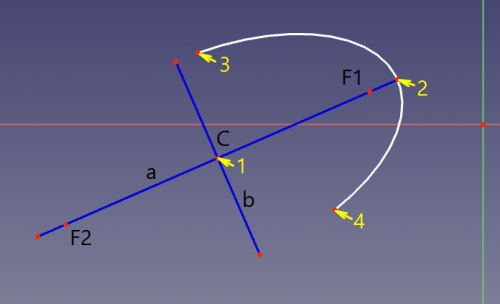

Descrizione
Questo strumento disegna un arco di ellisse selezionando quattro punti: il centro, la fine del raggio maggiore, il punto iniziale e il punto finale dell'arco.
Quando si avvia lo strumento, il puntatore del mouse si trasforma in una croce bianca con un'icona a forma di ellisse rossa. Le coordinate sono indicate in tempo reale.
 La sequenza della selezione è indicata dalle frecce gialle con i numeri. C è il centro, a è il diametro maggiore, b è il diametro minore, F1 e F2 sono i fuochi.
Uso
- Richiamare il comando facendo clic sul pulsante nella barra degli strumenti, scegliendo la voce nel menu, oppure usando la scorciatoia da tastiera che però deve essere assegnata prima in Personalizza l'interfaccia.
- Il primo clic nella vista 3D imposta il centro dell'ellisse. Il secondo clic imposta il primo raggio e l'orientamento dell'ellisse. Il terzo clic imposta l'altro raggio e il punto iniziale dell'arco. Il quarto clic imposta il punto finale dell'arco.
- Dopo il quarto clic, viene creata l'ellisse, insieme ad una serie di geometrie di costruzione allineate ad essa (diametro maggiore, diametro minore, due fuochi). La geometria di costruzione può essere cancellata manualmente se non è necessaria, e ricreata in seguito. Vedere Vincoli di allineamento interni e Mostra/Nascondi la geometria interna.
- Premere ESC o cliccare sul tasto destro del mouse per annullare la funzione.
Peculiarità
- Gli assi maggiore e minore dell'ellisse sono tassativi e non possono essere scambiati ridimensionando l'ellisse. Per scambiare gli assi l'ellisse deve essere ruotata.
- Diversamente dall'ellisse che può essere vincolata per diventare un cerchio, un arco di ellisse non può essere rappresentato o considerato un arco di cerchio.
- Spostare l'arco dell'ellisse dal bordo equivale a spostare il suo centro.
Versione
Introdotto in FreeCAD v0.15.4309
{kind=link}
{kind=link}